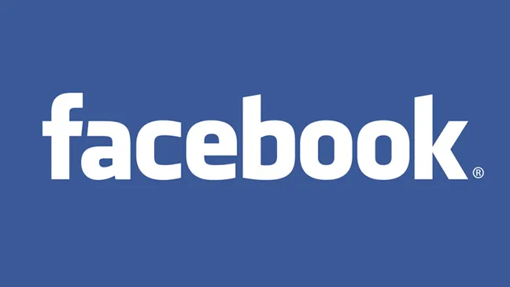
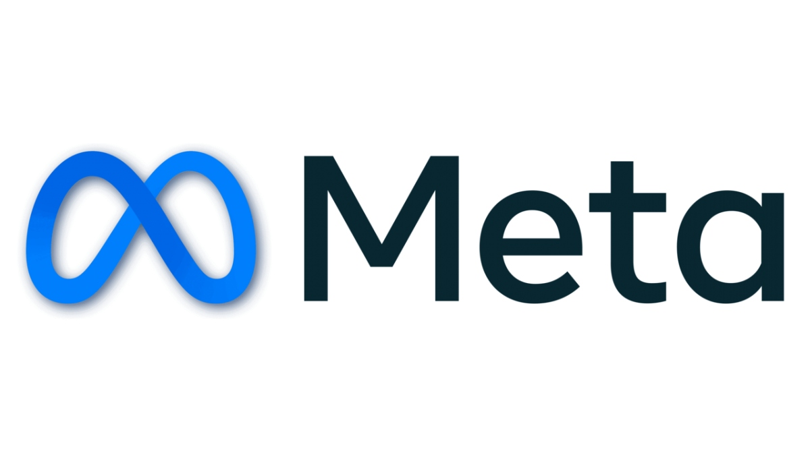

Introduction
From Wikipedia, the free encyclopedia
This article is about the social media service. For its owner, formerly known as Facebook, Inc., currently known as Meta Platforms, Inc.


Facebook is an American social networking service owned by the American technology conglomerate Meta Platforms. It was founded in 2004 by Mark Zuckerberg, along with his Harvard College roommates and fellow students Eduardo Saverin, Andrew McCollum, Dustin Moskovitz, and Chris Hughes. The name Facebook derives from the face book directories often given to American university students.
The service was initially targeted to Harvard students only before gradually expanding to other universities in North America. Since 2006, Facebook has permitted registration by individuals aged 13 and older, with the exception of South Korea, Spain, and Quebec, where the minimum age is 14.
As of December 2023, Facebook reported approximately 3.07 billion monthly active users worldwide. As of July 2025, it was ranked as the third-most-visited website in the world, with 23 percent of its traffic originating from the United States. It was the most downloaded mobile application of the 2010s.
Facebook can be accessed from devices with Internet connectivity, such as personal computers, tablets and smartphones. After registering, users can create a profile revealing personal information about themselves. They can post text, photos and multimedia which are shared either publicly or exclusively with other users who have agreed to be their friend, depending on privacy settings. Users can also communicate directly with each other with Messenger, edit messages (within 15 minutes after sending), join common-interest groups, and receive notifications on the activities of their Facebook friends and the pages they follow.
Facebook has often been criticized over issues such as user privacy (as with the Facebook–Cambridge Analytica data scandal), political manipulation (as with the 2016 U.S. elections) and mass surveillance. The company has also been subject to criticism over its psychological effects such as addiction and low self-esteem, and over content such as fake news, conspiracy theories, copyright infringement, and hate speech. Commentators have accused Facebook of willingly facilitating the spread of such content, as well as overemphasizing its number of users to appeal to advertisers.
History
The history of Facebook traces its growth from a college networking site to a global social networking service.
While attending Phillips Exeter in the early 2000s, Zuckerberg met Kris Tillery. Tillery, a one-time project collaborator with Zuckerberg, would create a school-based social networking project called Photo Address Book.[16] Photo Address Book was a digital face book, created through a linked database composed of student information derived from the official records of the Exeter Student Council.[16] The database contained linkages such as name, dorm-specific landline numbers, and student headshots.
Mark Zuckerberg built a website called "Facemash" in 2003 while attending Harvard University. The site was comparable to Hot or Not and used photos from online face books, asking users to choose the 'hotter' person". Zuckerberg was reported and faced expulsion, but the charges were dropped.
A "face book" is a student directory featuring photos and personal information. In January 2004, Zuckerberg coded a new site known as "TheFacebook", stating, "It is clear that the technology needed to create a centralized Website is readily available ... the benefits are many." Zuckerberg met with Harvard student Eduardo Saverin, and each agreed to invest $1,000. On February 4, 2004, Zuckerberg launched "TheFacebook".
Membership was initially restricted to students of Harvard College. Dustin Moskovitz, Andrew McCollum, and Chris Hughes joined Zuckerberg to help manage the growth of the site. It became available successively to most universities in the US and Canada. In 2004, Napster co-founder Sean Parker became company president and the company moved to Palo Alto, California. PayPal co-founder Peter Thiel gave Facebook its first investment. In 2005, the company dropped "the" from its name after purchasing the domain name Facebook.com.
In 2006, Facebook opened to everyone at least or only 13 years old with a valid email address. Facebook introduced key features like the News Feed, which became central to user engagement. By late 2007, Facebook had 100,000 pages on which companies promoted themselves. Facebook had surpassed MySpace in global traffic and became the world's most popular social media platform. [citation needed]Microsoft announced that it had purchased a 1.6% share of Facebook for $240 million ($373 million in 2025 dollars), giving Facebook an implied value of around $15 billion ($23.3 billion in 2025 dollars). Facebook focused on generating revenue through targeted advertising based on user data, a model that drove its rapid financial growth. In 2012, Facebook went public with one of the largest IPOs in tech history. Acquisitions played a significant role in Facebook's dominance. In 2012, it purchased Instagram, followed by WhatsApp and Oculus VR in 2014, extending its influence beyond social networking into messaging and virtual reality.
The Facebook–Cambridge Analytica data scandal in 2018 revealed misuse of user data to influence elections, sparking global outcry and leading to regulatory fines and hearings. Facebook's role in global events, including its use in organizing movements like the Arab Spring and its impact on events like the Rohingya genocide in Myanmar, highlighted its dual nature as a tool for both empowerment and harm. In 2021, Facebook rebranded as Meta, reflecting its shift toward building the "metaverse" and focusing on virtual reality and augmented reality technologies.